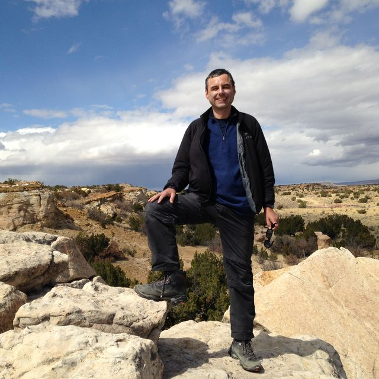
Helge Gonnermann
Professor
helge at rice.edu
Current and former members of our research group.

Professor
helge at rice.edu
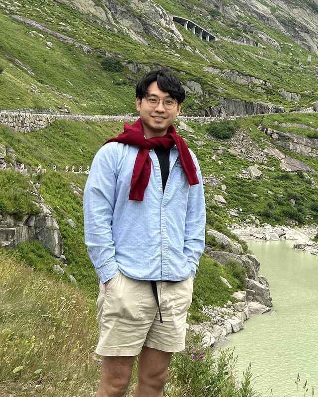
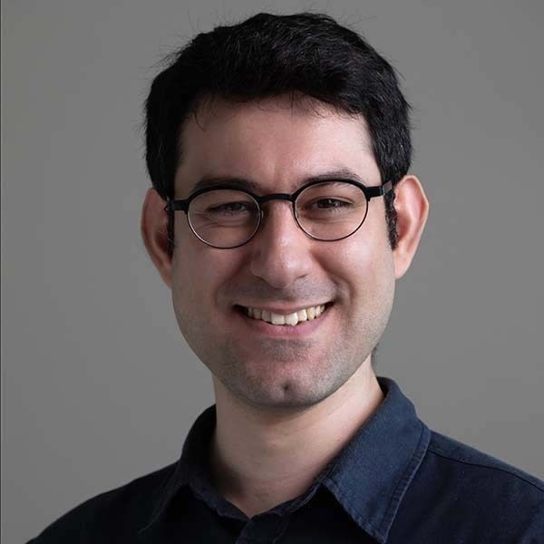
PhD student
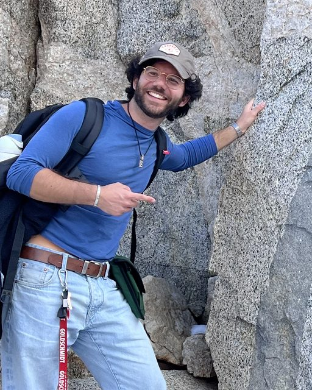
Former PhD student
Postdoctoral Scholar
Department of Earth and Planetary Science
University of California, Berkeley
gaetanoferrante.com
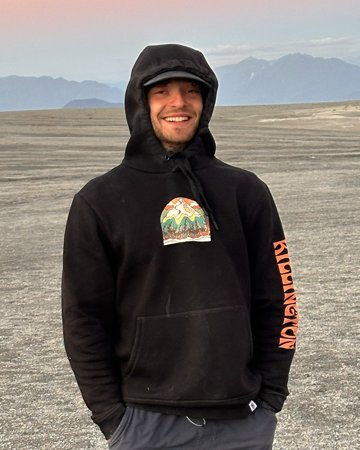
Former undergraduate student
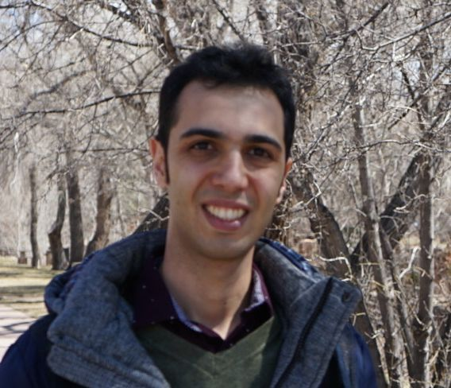
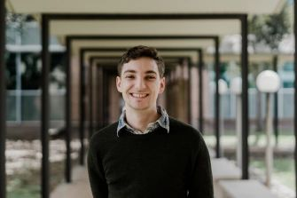
Former PhD student
Assistant Professor
Department of Geological Sciences
California State University, Fullerton
pphelps at fullerton.edu
patrickphelps.org
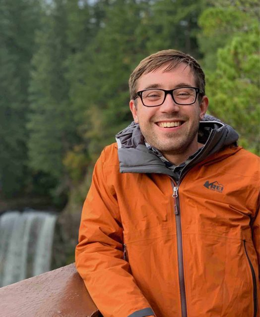
Former postdoctoral fellow
Reader (Associate Professor) in Volcanology
Lancaster Environment Centre
Lancaster University
lancaster.ac.uk profile
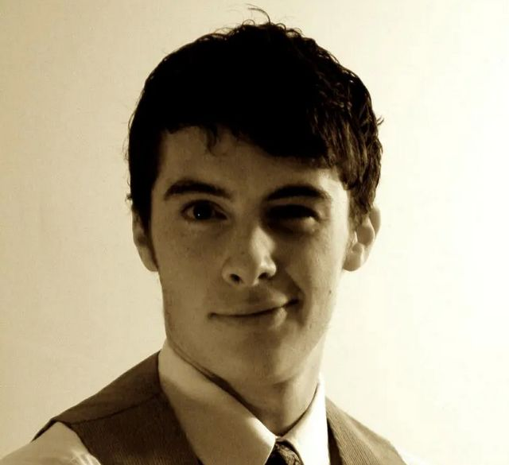
Former postdoctoral fellow
jakejordan84 at gmail.com
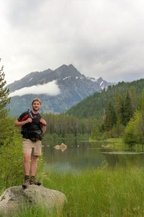
Former postdoctoral fellow
Assistant Professor
Department of Earth Sciences
1272 University of Oregon
Eugene, OR 97403
Office: (541) 346-4706
tgiachet at uoregon.edu
pages.uoregon.edu/tgiachet
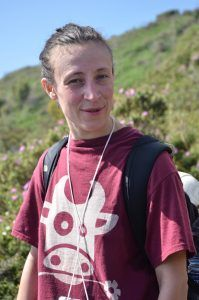
Former postdoctoral fellow
Researcher
Istituto Nazionale di Geofisica e Vulcanologia, sezione di Pisa
via della Faggiola, 32
56126 Pisa, Italy
chiara.montagna at ingv.it
Google Scholar profile
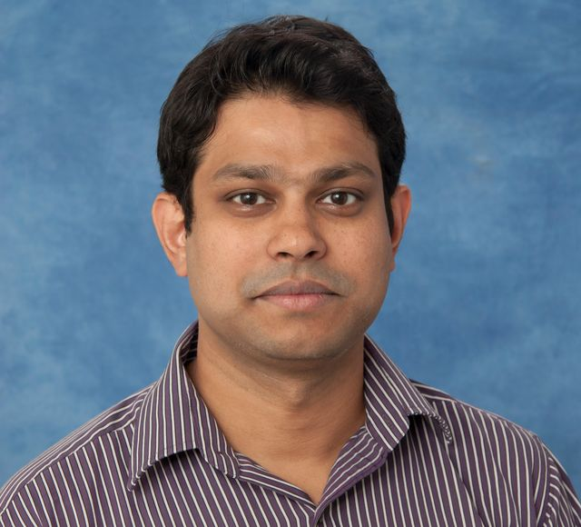
Former PhD student
Assistant Professor
Department of Geosciences
University of Arizona
(520) 621-4478
pmoitra at arizona.edu
sites.arizona.edu/moitra-lab
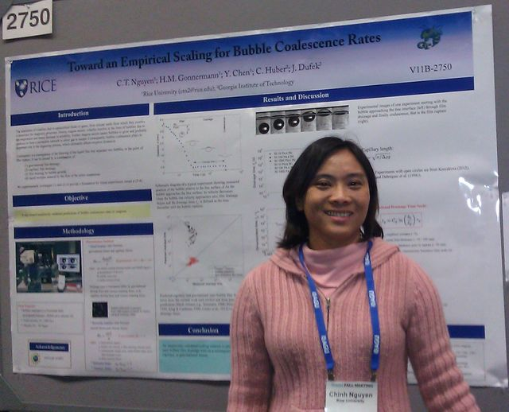
Former PhD student
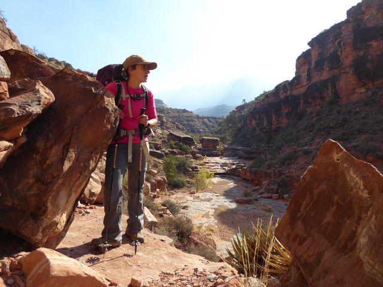
Former MS student
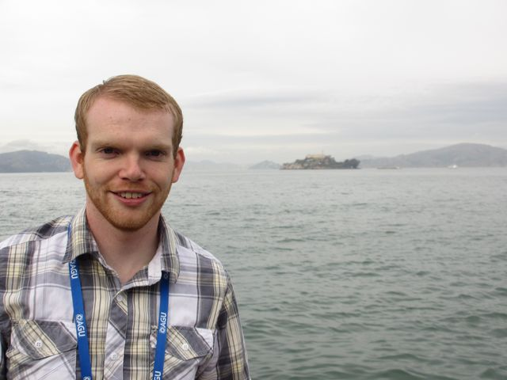
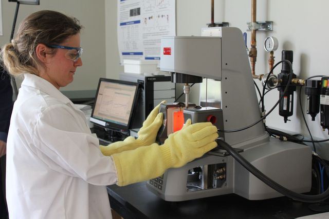
Summer intern
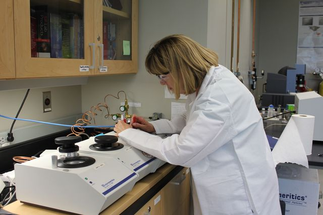
Research assistant, teacher
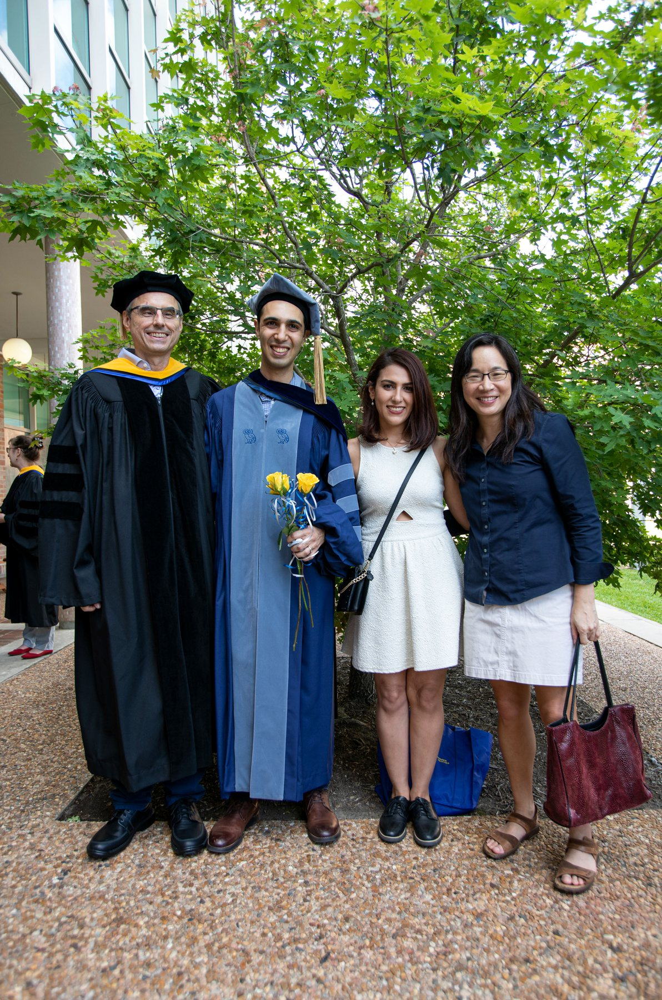
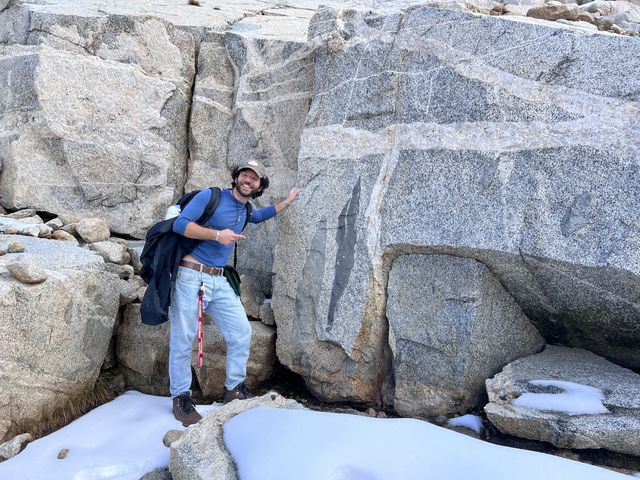
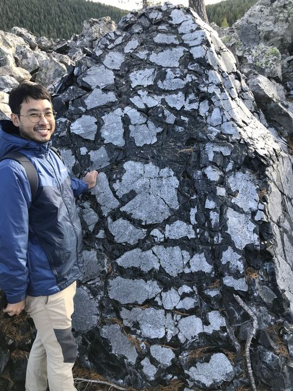
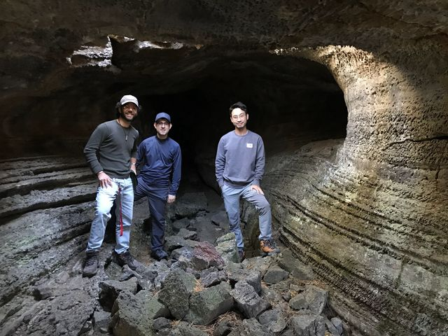
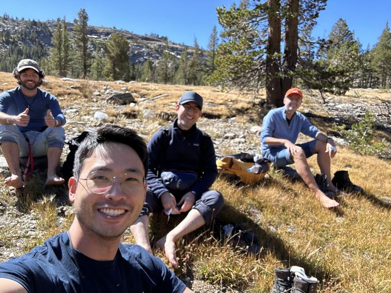
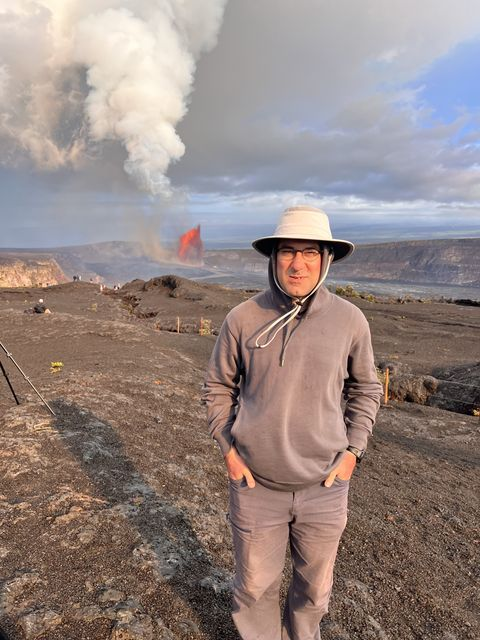
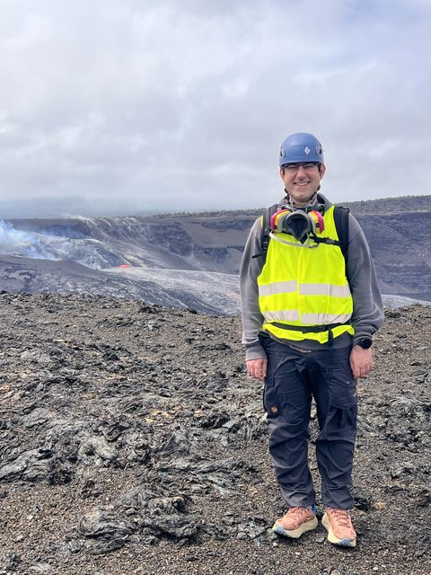
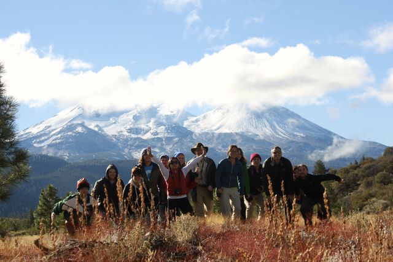
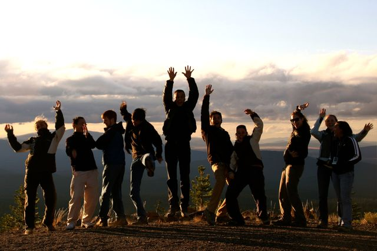
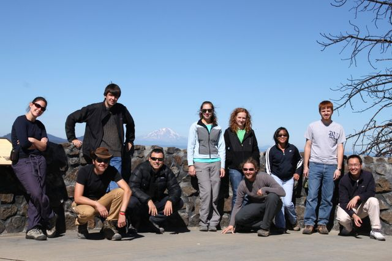
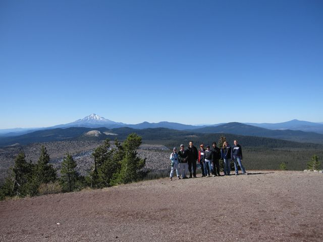
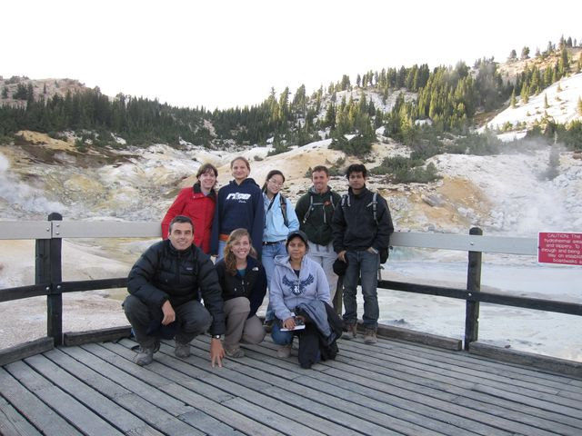
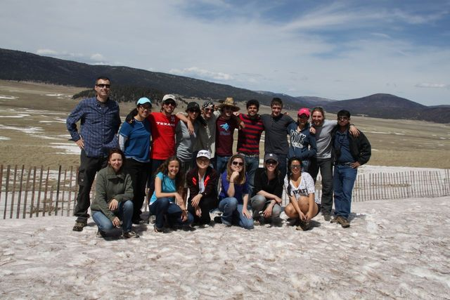
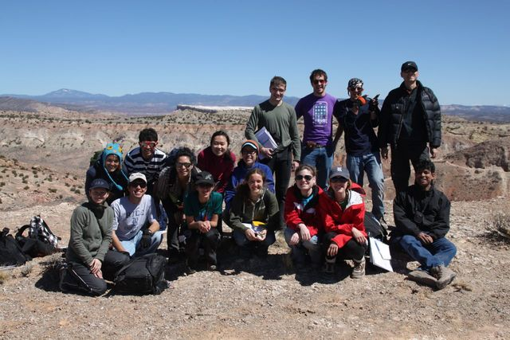